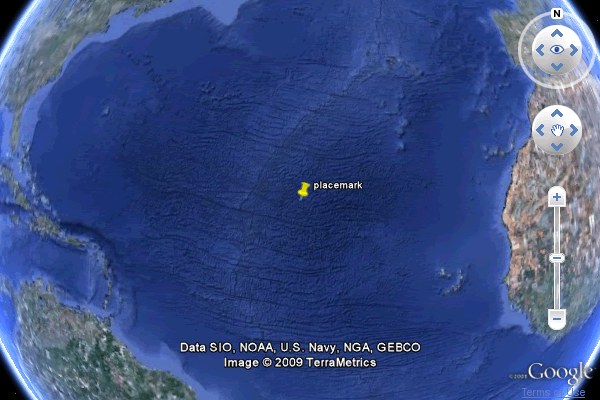
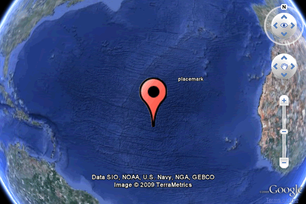
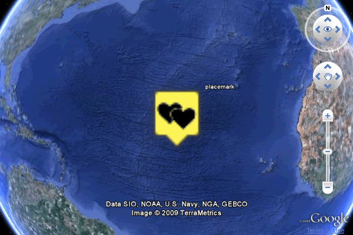

©2010 Google -
Code Home -
Terms of Service -
Privacy Policy -
Site Directory
Google Code offered in:
English -
Español -
日本語 -
한국어 -
Português -
Pусский -
中文(简体) -
中文(繁體)
A point placemark marks a position on the Earth's surface. The most basic placemark includes an standard icon and a geographic location. Additionally, a placemark can include:
The most basic point placemark contains only location information - no name or description is required. The following code will place the default placemark icon (a yellow pushpin) on the surface of the globe at the specified coordinates.
// Create the placemark.
var placemark = ge.createPlacemark('');
// Set the placemark's location.
var point = ge.createPoint('');
point.setLatitude(12.345);
point.setLongitude(54.321);
placemark.setGeometry(point);
// Add the placemark to Earth.
ge.getFeatures().appendChild(placemark);
A placemark name is displayed next to the placemark icon.

// Create the placemark.
var placemark = ge.createPlacemark('');
placemark.setName("placemark");
// Set the placemark's location.
var point = ge.createPoint('');
point.setLatitude(12.345);
point.setLongitude(54.321);
placemark.setGeometry(point);
// Add the placemark to Earth.
ge.getFeatures().appendChild(placemark);
Any image can be used as a placemark's icon. The image URL is specified using the setHref() function.
Once the URL has been defined, call setIcon() to apply the icon to a style.
Finally, apply the style to the placemark.
// Create the placemark.
var placemark = ge.createPlacemark('');
placemark.setName("placemark");
// Define a custom icon.
var icon = ge.createIcon('');
icon.setHref('http://maps.google.com/mapfiles/kml/paddle/red-circle.png');
var style = ge.createStyle(''); //create a new style
style.getIconStyle().setIcon(icon); //apply the icon to the style
placemark.setStyleSelector(style); //apply the style to the placemark
// Set the placemark's location.
var point = ge.createPoint('');
point.setLatitude(12.345);
point.setLongitude(54.321);
placemark.setGeometry(point);
// Add the placemark to Earth.
ge.getFeatures().appendChild(placemark);
Changing the size of a placemark's icon is accomplished through the use of the
KmlIconStyle class' setScale function; a scale of 1.0 corresponds
to 100%.

// Create the placemark.
var placemark = ge.createPlacemark('');
placemark.setName("placemark");
// Define a custom icon.
var icon = ge.createIcon('');
icon.setHref('http://maps.google.com/mapfiles/kml/paddle/red-circle.png');
var style = ge.createStyle('');
style.getIconStyle().setIcon(icon);
style.getIconStyle().setScale(5.0);
placemark.setStyleSelector(style);
// Set the placemark's location.
var point = ge.createPoint('');
point.setLatitude(12.345);
point.setLongitude(54.321);
placemark.setGeometry(point);
// Add the placemark to Earth.
ge.getFeatures().appendChild(placemark);
A StyleMap can be used to define both a normal and a highlight, or rollover, state
for an icon. In the example below, the highlight state is scaled to 500% using
the same setScale function as above, and the URL of the image file
is changed. Any attribute of an icon can be changed.

See the rollover in action: http://code.google.com/apis/earth/documentation/samples/placemark_example.html
// Create the placemark.
var placemark = ge.createPlacemark('');
placemark.setName("placemark");
// Set the placemark's location.
var point = ge.createPoint('');
point.setLatitude(12.345);
point.setLongitude(54.321);
placemark.setGeometry(point);
// Create a style map.
var styleMap = ge.createStyleMap('');
// Create normal style for style map.
var normalStyle = ge.createStyle('');
var normalIcon = ge.createIcon('');
normalIcon.setHref('http://maps.google.com/mapfiles/kml/paddle/red-circle.png');
normalStyle.getIconStyle().setIcon(normalIcon);
// Create highlight style for style map.
var highlightStyle = ge.createStyle('');
var highlightIcon = ge.createIcon('');
highlightIcon.setHref('http://google-maps-icons.googlecode.com/files/girlfriend.png');
highlightStyle.getIconStyle().setIcon(highlightIcon);
highlightStyle.getIconStyle().setScale(5.0);
styleMap.setNormalStyle(normalStyle);
styleMap.setHighlightStyle(highlightStyle);
// Apply stylemap to a placemark.
placemark.setStyleSelector(styleMap);
//Add the placemark to Earth.
ge.getFeatures().appendChild(placemark);